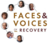
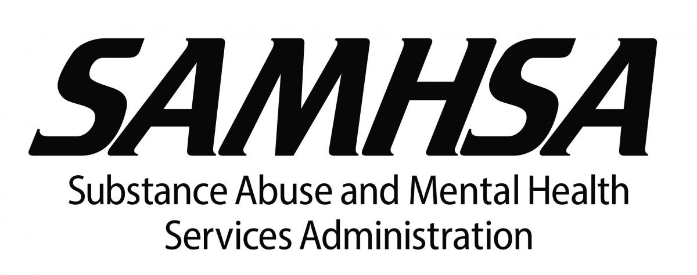

Frequently Asked Questions
How do I find which Oxford Houses have vacancies?
The website www.oxfordvacancies.com provides up-to-date information on vacancies, locations, contact names, phone numbers, and the last update time.
If someone needs help with a drug or alcohol problem, where should they start?
A good place to start is with a drug and alcohol assessment. Heartland Regional Alcohol and Drug Assessment Center can answer questions about cost, appointments, etc. Their website is www.hradac.com.
I have a house that I would like to make an Oxford House. What is the criteria and process?
Oxford Houses are located in good neighborhoods—that is the first criterion. The house needs to accommodate at least six individuals, so it should have adequate space. Four or more bedrooms and at least two bathrooms are important. If you think your house might fit this description, please contact us. We would be happy to talk with you about it!
My civic/faith/corrections group would like a presentation on addiction and Oxford Houses. Who should I call?
Call us! We will set it up. Oxford House individuals, chapters, and/or Friends of Recovery personnel will be happy to answer all your questions!
What are some other resources for drug and alcohol recovery?
-
The Oxford House website has a multitude of resources to help in your recovery. They have directories not only for Kansas but other states.
-

Faces & Voices of Recovery support individuals in long-term recovery from drug and alcohol addiction. Check their resources page for publications and educational material.
-

The Substance Abuse and Mental Health Services Administration (SAMHSA) is the agency within the U.S. Department of Health and Human Services that leads public health efforts to advance the behavioral health of the nation. Use their Locator Map to find treatment centers in your area.
-

College students are using drugs and alcohol at a higher rate than young adults of the same age who don’t attend school. A recent study from the National Survey on Drug Use and Health indicated that more than half of full-time college students ages 18-22 drank alcohol in the past month.